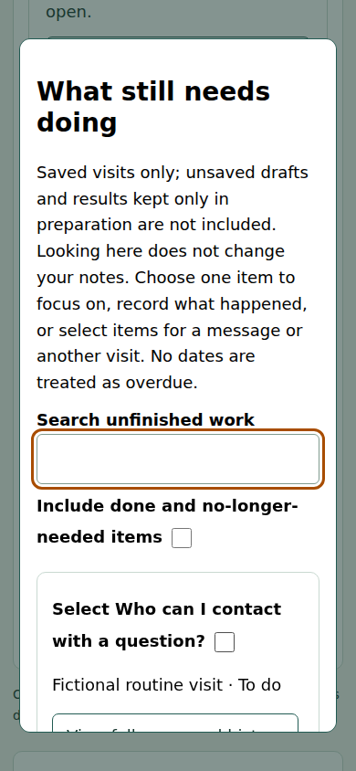
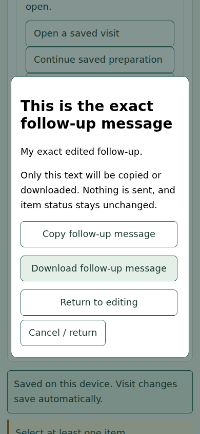

01 / 12 · The decision
Help someone follow through after the visit
Bring unfinished questions and next steps together across saved appointments. Let the person choose a focus, record what happened, prepare a message and take unresolved work into another visit. Extend the existing product instead of adding a separate account or service.
Speaker notes
The product gap is observable in the previous software: next steps were stored inside individual visits. We have not established how often people need this overview or whether they prefer it.
02 / 12 · The complete journey
From an open question to a recorded outcome
A fictional person returns after two appointments, finds a contact question, chooses it as their focus and prepares a message. After actually contacting the office, they record Contacted, then Waiting for reply. They can return offline and later mark the question answered or bring it into a new visit.
Speaker notes
Exporting a message is not proof of contact. Keep the recording of actual events separate from drafting tools.
03 / 12 · The overview
See unfinished work without opening every visit
Rows show the question or next step, its source visit and progress. Search is read-only. Completed and no-longer-needed items are hidden by default but remain reviewable. Private preparation, answer notes and progress notes are not used as search material.

Speaker notes
Only saved visits are included. Temporary drafts and results kept solely inside preparation have different storage boundaries; the interface says so.
04 / 12 · A chosen focus
Let the person choose what comes next
One item can be chosen as the current focus. The app does not rank medical importance, calculate urgency or label a date overdue. Closing or removing an item clears an unavailable focus on a successful write; opening the overview alone does not rewrite stored notes.
Speaker notes
Focus is a local convenience, not a notification or appointment. It is not copied into a new visit or exported in library backups.
05 / 12 · Progress in plain language
Record contact, waiting, completion or closure
The follow-up choices are To do, Contacted, Waiting for reply, Done and No longer needed. For a question, Done explicitly marks it Answered. No longer needed closes it without claiming an answer. A private note and date are optional. The latest 50 events stay with the item.
Speaker notes
The history is personal, not clinician-confirmed. State changes made through the original visit screens are recorded too, without inventing a call or private note.
06 / 12 · A message draft
Choose the content before writing the message
Select the items deliberately. Visit titles/dates and next-step contacts are optional context, initially unchecked. The generated text contains no private preparation, answer notes or follow-up history. Every word can be edited before an exact preview, copy or download.

Speaker notes
The draft is temporary and does not update itself when source notes change. The app sends nothing and changes no progress state as a result of export.
07 / 12 · The next appointment
Copy unresolved work without rewriting the original
Select items from one or more saved visits and review the new draft. Copies have fresh identities and progress, no earlier answer notes and no follow-up history. Their source visit title/date and item identity remain visible. Action dates and contacts are shown before copying.
Speaker notes
Original and copy change independently. Source context is another retained copy of that title/date; deleting the original does not erase it everywhere.
08 / 12 · Backups and older notes
Preserve history and keep source links honest
Current full backups keep follow-up history and copied-source context. They do not export recovery history or local focus. Older supported notes are read without an immediate write. Library imports keep conflicting visits separate and relocate source links to the correct imported copy.
Speaker notes
Repeated imports must remain repeatable, and a missing source must be reported rather than redirecting to an unrelated visit. The original source identity is kept separate from its relocated local link.
09 / 12 · When something goes wrong
Do not replace newer work or invent success
Failed saves leave stored history unchanged and entered notes available. A conflicting tab blocks stale progress. Unsaved edits to the same open visit cannot be overwritten by a follow-up write. Repeated clicks, cancellation and tab closure while a write waits are checked.
Speaker notes
These safeguards are tested as distinct paths. A green normal-flow test alone would not establish them.
10 / 12 · Technical evidence
Check the whole journey and the old workflows
13/13 follow-up browser scenarios passed in the recorded run. The complete model report contains 100 passing checks. Existing visit, continuity, phone, intake, preparation and recovery suites remain release gates; the packaged app is checked after extraction.
- FU-01 — Read-only cross-visit list, chosen focus, waiting history and explicit completion: passed
- FU-02 — Message requires selection, excludes private notes, supports edit preview download and changes no status: passed
- FU-03 — Multi-visit carry-forward keeps originals and records independent sources: passed
- FU-04 — Failed saves keep notes and retry once; another tab blocks stale progress: passed
- FU-05 — Double confirmation and cancellation of queued progress do not create extra events: passed
- FU-06 — Original navigation protects unsaved draft; source and copy progress remain independent: passed
- FU-07 — Explicit message context, clipboard failure, keyboard and narrow preview preserve state: passed
- FU-08 — Complete offline browser restart preserves waiting history and focus with no outgoing content: passed
- FU-09 — Closing queued progress and failed focus writes leave stored work unchanged: passed
- FU-10 — A copy retains source context but missing original is reported without redirecting: passed
- FU-11 — Recovery from the previous format migrates removed items and keeps new progress in backups: passed
- FU-12 — Unsaved edits to the same open visit cannot be overwritten by follow-up: passed
- FU-13 — Library import remaps copied-source links and reimport adds nothing: passed
Recorded 2026-09-16T21:53:14.184Z. Browser results and source hashes · Model evidence
Speaker notes
Read the named scenarios and source hashes. Test counts describe recorded checks, not a guarantee of all possible behaviour.
11 / 12 · Limits
Working software does not prove usefulness
All examples are fictional. There are no participant sessions, claims of reduced stress or clinical benefit. Physical-phone and screen-reader use remain unverified. The app has no accounts, cloud storage, notifications, automatic messages or medical recommendations.
Speaker notes
A future evaluation could compare this workflow with ordinary notes, but recruitment is not part of this engineering goal. Do not present fictional examples as testimonials.
12 / 12 · Delivery
A complete product change, not only a list
Deliver the overview, focus, history, exact message flow and source-linked carry-forward together with requirements, walkthroughs, this executive/talk briefing, acceptance evidence and a verified release. Keep the limitations and backup boundaries visible in the app as well as the report.
Speaker notes
Approval requires current-source evidence and the extracted release. The acceptance map records whether each requirement has been demonstrated.